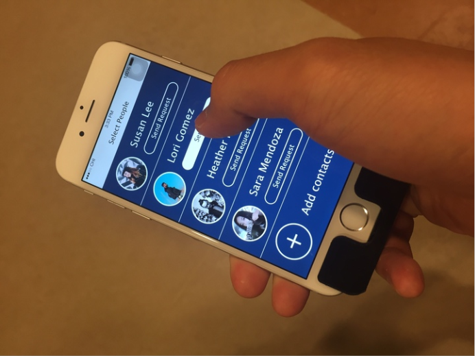

Solution Concept
Readful-U is a mobile application with an attachable stand that helps people with low vision to read easily. It has 2 function units: the general function unit and the "Read for you" social reading unit, which not only assists low vision people to read, but also let them feel the support and warmth from families and friends.
Mobile Application

Mobile application provides effective reading assist, integrated with social interaction activities.
Attachable Stand

Attachable Stand with Hot Keys provides stable and smooth reading experience. Physical buttons are easier to find.